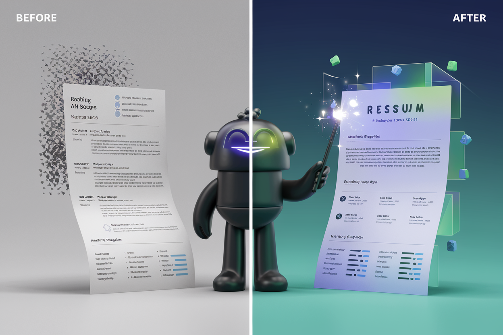

Welcome back, job seekers and AI enthusiasts! You've made it to the pièce de résistance of our AI resume adventure: the case studies. It's time to see how our silicon-powered strategies play out in the wild world of job hunting. Grab your popcorn, because we're about to dive into some real-life resume makeover magic.
Before: Jane Doe, a software engineer with 5 years of Java-juggling and Python-punching experience, dreaming of riding the machine learning wave.
Initial Resume Summary: "Experienced software engineer with a strong background in Java and Python development. Skilled in developing scalable web applications and database management."
Mission: Transform from a general code-slinger to a machine learning mage without actually time-traveling or body-swapping.
AI-Enhanced Resume Summary: "Software engineer with 5 years of experience, transitioning to machine learning. Proficient in Python and Java, with hands-on experience in implementing machine learning algorithms for predictive analytics in web applications. Skilled in data preprocessing, model selection, and scalable AI-driven solutions."
The Happy Ending: Jane's inbox was flooded faster than a poorly optimized algorithm! She snagged callbacks for ML Engineer positions at two tech companies, with interviewers practically drooling over her "relevant" project experience.
AI tools aren't just smoke and mirrors – they're more like x-ray specs for your resume. They helped Jane uncover hidden ML superpowers in her existing experience. It's not about fabrication; it's about illumination!
Before: Dr. John Smith, fresh out of his Ph.D. in Biochemistry, trying to turn his academic lead into industry gold.
Initial Project Description: "Doctoral Thesis: 'Analysis of Protein Folding Mechanisms in Neurodegenerative Diseases' - Conducted extensive laboratory research on protein misfolding - Utilized various spectroscopic techniques for protein analysis - Published 3 peer-reviewed papers in academic journals"
Mission: Translate "academese" into "corporatese" without losing his soul to the dark side.
AI-Enhanced Project Description: "Doctoral Research: Protein Folding Mechanisms in Neurodegenerative Diseases - Spearheaded innovative research resulting in a novel protein analysis method, potentially accelerating drug discovery for Alzheimer's disease - Increased efficiency of protein structure analysis by 40% through optimization of spectroscopic techniques - Demonstrated research impact with 3 peer-reviewed publications and a patent application, showcasing potential for translational research"
The Happy Ending: John's inbox started looking like a popular kid's Facebook wall circa 2010. He landed interviews with two leading pharmaceutical companies, both swooning over his ability to make complex science sound sexy (in a corporate way, of course).
AI tools are like a universal translator for your achievements. They helped John speak "corporate" without selling his academic soul. Remember, it's not about dumbing down your work; it's about smartening up your presentation!
Before: Emily Rodrigo, Environmental Engineer extraordinaire, with 8 years of making the world a cleaner place, aiming to join the renewable energy revolution.
Initial Skills Section: "Skills: - Environmental impact assessments - Waste management systems - AutoCAD - Project management"
Mission: Turn her green thumb into a golden ticket to the renewable energy sector.
AI-Enhanced Skills Section:
Core Competencies:
- Renewable Energy Systems: Solar PV, Wind, Biomass
- Sustainable Design & LEED Certification
- Environmental Impact Modeling using AI/ML techniques
- GIS for Renewable Resource Assessment
- Carbon Footprint Analysis & Mitigation Strategies
- Project Management (Agile, Sustainable Practices)
Technical Skills:
- Software: AutoCAD, RETScreen, HOMER Pro
- Programming: Python for data analysis, R for statistical modeling
- Certifications: LEED AP, Certified Energy Manager (CEM)
The Happy Ending: Emily's inbox lit up like a solar farm on a sunny day! She scored multiple interview requests, including one from a leading solar energy firm that was particularly charged up about her AI/ML skills in environmental modeling.
AI tools are like career fertilizer – they help your skills grow in new and exciting directions. Emily's resume went from "generally green" to "specifically sustainable," showcasing a perfect blend of environmental expertise and cutting-edge tech skills.
Before: Michael Wong, a Data Scientist with 6 years of crunching numbers in the financial sector, dreaming of swapping stock tickers for silicon valley servers.
Initial Resume Achievement: "- Developed predictive models for credit risk assessment, improving accuracy by 15% - Managed a team of 3 junior data analysts in quarterly reporting projects"
Mission: Translate his financial finesse into tech industry gold without needing a flux capacitor.
AI-Enhanced Resume Achievements:
The Happy Ending: Michael's inbox started buzzing like a smartphone at a tech conference! He locked down interviews with three major tech companies, with hiring managers practically swooning over his ability to turn data into dollars.
AI tools are like a universal adapter for your career achievements. They helped Michael plug his financial sector successes into the tech industry socket.
Before: Sarah Johnson, a Mechanical Engineer with 10 years of making things tick, looking to lead the charge into the brave new world of smart manufacturing.
Initial Resume Summary: "Experienced Mechanical Engineer with a strong background in product design and manufacturing processes. Skilled in CAD/CAM systems and lean manufacturing principles."
Mission: Upgrade her career OS from "Traditional Manufacturing 3.0" to "Industry 4.0 Trailblazer" without any system crashes.
AI-Enhanced Resume Summary: "Forward-thinking Mechanical Engineer with 10 years of experience, driving the integration of Industry 4.0 technologies in manufacturing. Expertise in IoT-enabled product design, AI-driven process optimization, and leading cross-functional teams in digital transformation initiatives. Demonstrated success in improving production efficiency by 35% through smart factory implementations."
The Happy Ending: Sarah's inbox turned into a job offer vending machine! She scored invitations to interview for two Director-level positions in smart manufacturing, with both companies practically salivating over her vision for Industry 4.0 integration.
AI tools are like a career time machine – they helped Sarah quantum leap from traditional engineering to the cutting edge of smart manufacturing. It's not about leaving your old skills behind; it's about turbocharging them for the future!
Well, folks, we've reached the end of our AI-powered resume transformation journey. Let's recap the key lessons from our intrepid job seekers:
AI isn't just translating languages; it's translating careers! It's like having a Babel fish for your professional life, helping you speak the language of your dream industry fluently.
AI tools are like trendspotters for your career. They're not just telling you what's hot now; they're predicting what skills will be sizzling in the future.
AI helps turn your techno-babble into music to a hiring manager's ears. It's not about exaggerating; it's about translating your binary brilliance into boardroom language.
With AI, customizing your resume for different roles is super simple, like having a shape-shifting resume that adapts to each job faster than you can say "application submitted."
AI ensures your resume is sprinkled with just the right amount of keyword magic to charm both robots and humans.
As we wrap up this whirlwind tour of AI-powered resume transformations, remember that these tools are your sidekicks, not your ghostwriters. They're here to help you uncover the superhero version of your professional self that's been hiding under that mild-mannered Clark Kent exterior.
So, go forth, you brilliant STEM stars! Armed with your new AI allies, you're ready to conquer job boards, charm ATSes, and wow hiring managers. Your resume is no longer just a document; it's a high-tech marketing campaign for the awesome professional that is you!
And remember, in the ever-evolving world of STEM careers, you're not just looking for a job – you're embarking on the next exciting chapter of your professional adventure. With your newfound AI resume powers, you're ready to write that chapter in a way that's true to yourself, impressive to others, and exciting to both humans and algorithms alike.
Now that you know how to evaluate AI-generated suggestions, try using tools like Textio or Jobscan to see how they can optimize your resume. Make sure to maintain your personal style while taking advantage of AI refinements. Visit our website for personalized feedback and more advanced AI tools to take your resume to the next level.